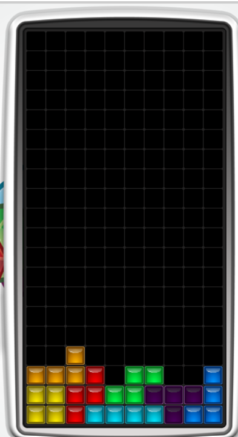
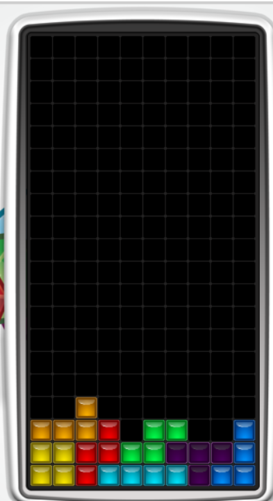

How to do a T-spin in Tetris
Disclaimer: This guide is for modern Tetris, not for classic Tetris
Disclaimer: This guide is for modern Tetris, not for classic Tetris
In Tetris, the goal of the game is to get as many points as possible. The two ways to get the most points are with tetrises and T-spins.
The difference between a T-spin and just placing a T is that the T-piece must be rotated into the shape.
Notice that this T-piece cannot move after being rotated. The T-piece also had to be rotated into this shape; therefore, this counts as a T-spin. Notice that 3/4 of the corners around the T-piece are filled.